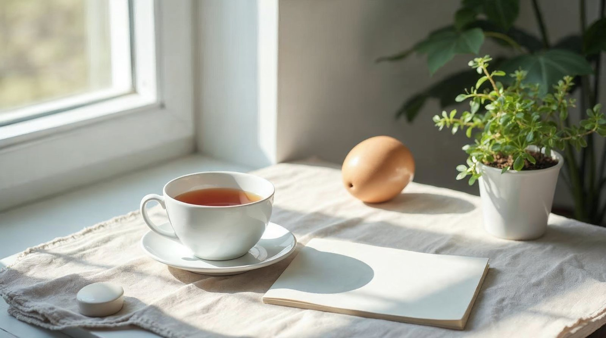
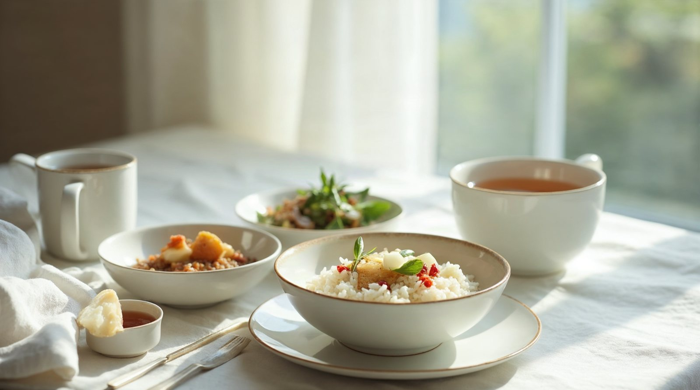
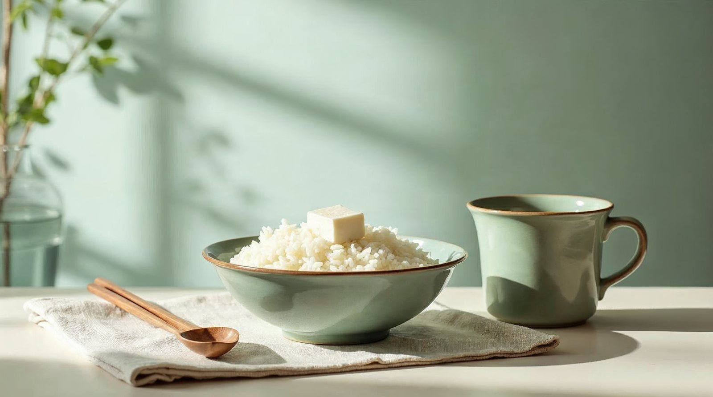
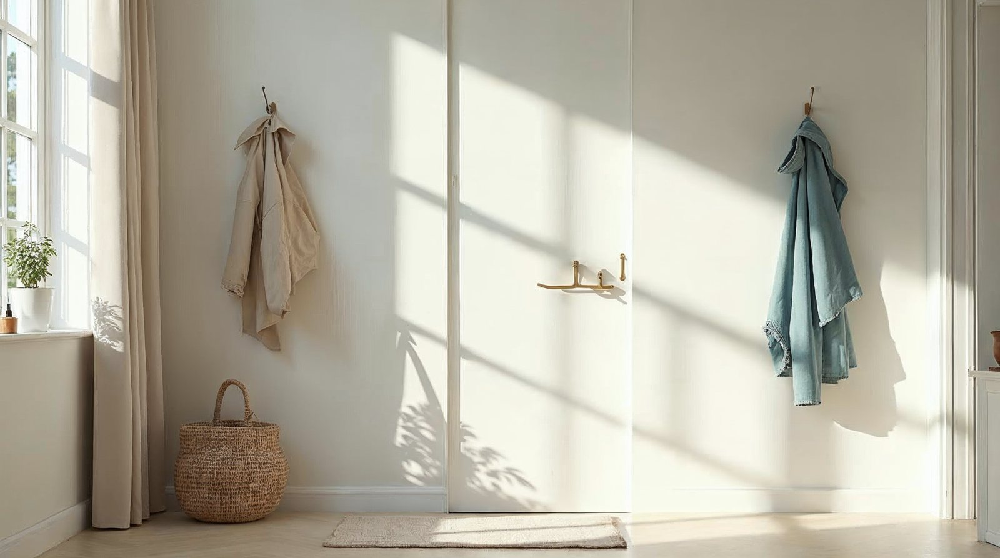
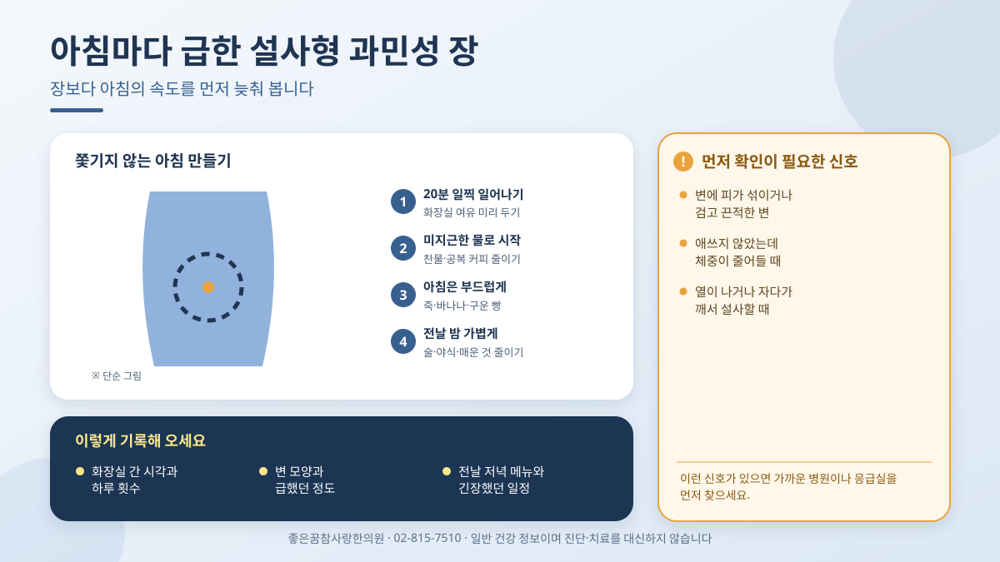

이종호 한의사 감수좋은꿈참사랑한의원 대표원장 (한의사 면허번호 19769)발행 2026-11-26 · 수정 2026-11-26
이 글의 차례
알람을 끄고 일어나 세수를 하는데 아랫배가 꾸르륵 움직이기 시작합니다. 아침을 먹기도 전에 화장실을 한 번, 옷을 입다가 또 한 번 다녀옵니다. 지하철에 올라서도 마음이 놓이지 않아 다음 역 화장실 위치부터 떠올립니다.
진료실에서 이런 아침 이야기를 참 자주 듣습니다. 검사에서는 큰 이상이 없다는데 아침마다 이러니 약속을 오전에 잡지 못하고, 출근 시간을 넉넉히 당겨 두는 분도 계십니다. 몸보다 마음이 먼저 지쳐 오시는 경우가 많습니다.
이렇게 장의 생김새에는 뚜렷한 이상이 없는데 배가 아프고 대변 모양과 횟수가 자주 바뀌는 상태를 과민성 장 증후군이라고 부릅니다. 그 가운데 묽은 변과 급한 변의가 중심인 경우를 설사형이라고 나눠 부릅니다.
설사형은 '참기 어렵다'는 느낌이 가장 큰 괴로움입니다. 그래서 저는 대변 횟수만큼 그 급한 느낌이 언제, 어떤 상황에서 오는지를 함께 여쭙니다. 그 안에 하루를 다시 짜는 단서가 들어 있는 경우가 많습니다.
설사형 과민성 장은 어떤 상태인가요
과민성 장은 장이 망가진 상태라기보다, 장이 신호에 지나치게 민감하게 반응하는 상태에 가깝습니다. 같은 양의 음식과 가스가 지나가도 더 크게 꿈틀거리고, 더 아프게 느끼고, 더 서둘러 내보내려 합니다.
설사형에서는 배가 아프다가 변을 보고 나면 한결 편해지는 흐름이 흔합니다. 변은 묽거나 풀어지고, 하루에 여러 번 보시며, 다 보고 나서도 남은 것 같은 느낌이 이어지기도 합니다. 변에 끈적한 점액이 묻어 나오는 분도 계십니다.
이런 흐름이 몇 달에 걸쳐 일주일에 하루 이상 반복될 때 과민성 장을 생각합니다. 다만 이 이름은 다른 장 질환이 없다는 것을 확인한 뒤에 붙이는 이름이라, 처음이라면 내과에서 먼저 확인을 받아 보시는 순서가 좋습니다.
왜 하필 아침에 몰릴까요
장은 아침에 깨어납니다. 자는 동안 조용하던 대장이 눈을 뜨고 몸을 일으키면서 크게 움직이기 시작하고, 첫 음식이나 따뜻한 물이 위에 들어가면 대장이 한 번 더 크게 밀어내는 반사가 일어납니다. 누구에게나 있는 자연스러운 움직임입니다.
설사형 과민성 장이 있으면 이 아침 움직임이 유난히 크고 급하게 나타납니다. 여기에 출근 준비의 조급함, 늦으면 안 된다는 긴장이 더해지면 장은 더 서두릅니다. 장과 뇌는 신경으로 촘촘히 이어져 있어서, 마음이 쫓기면 장도 함께 쫓깁니다.
그래서 주말이나 휴가 때는 아침이 훨씬 편하다는 분이 많습니다. 반대로 월요일 아침, 중요한 회의나 시험이 있는 날 유독 심해지기도 합니다. 이 차이를 알아차리는 것만으로도 '내 장이 이상한가' 하는 불안이 조금 덜어집니다.
전날 저녁의 영향도 큽니다. 늦은 밤 기름지고 매운 음식, 술, 찬 맥주를 드신 다음 날 아침에 더 급해지는 분이 많습니다. 아침 화장실은 사실 전날 밤부터 이어진 이야기인 셈입니다.
다른 장 질환과는 어떻게 다를까요
묽은 변이 이어진다고 모두 과민성 장은 아닙니다. 비슷해 보이지만 따로 확인이 필요한 경우가 있어서, 차이를 알아 두시면 진료실에서 설명하시기도 쉽습니다.
- 장염: 갑자기 시작해 며칠 안에 가라앉는 경우가 많고, 열이나 구토가 함께 오기도 합니다
- 유당 불내증: 우유나 유제품을 드신 뒤에 유독 배가 끓고 묽은 변을 봅니다
- 염증성 장 질환: 피가 섞인 변, 밤에도 깨서 보는 설사, 체중 감소가 함께 오는 경우가 많습니다
- 갑상선 항진: 설사와 함께 두근거림, 땀, 체중 감소가 함께 나타나기도 합니다
- 약이나 영양제: 새로 시작한 약이나 마그네슘 같은 보충제가 변을 묽게 하기도 합니다
과민성 장은 대개 잠든 동안에는 조용하고, 깨어 있을 때 불편이 몰립니다. 밤에 자다가 설사 때문에 깨는 일이 잦다면 다른 원인을 먼저 확인해 보셔야 합니다.

마음과 장은 어떻게 이어져 있나요
설사형 과민성 장을 가진 분들 가운데는 꼼꼼하고 책임감이 큰 분이 많습니다. 늦으면 안 된다, 실수하면 안 된다는 생각이 몸에 긴장으로 남고, 그 긴장이 배 속에서 먼저 드러납니다.
한 번 지하철에서 급했던 경험이 있으면, 다음에는 지하철을 타기 전부터 배가 신경 쓰입니다. 걱정이 장을 예민하게 하고, 예민해진 장이 다시 걱정을 키우는 고리가 생깁니다. 이 고리를 알아차리는 것이 풀어 가는 첫걸음입니다.
그래서 진료실에서는 배 이야기와 함께 잠, 일의 무게, 최근의 걱정거리를 같이 여쭙니다. 장만 따로 떼어 보기보다 하루 전체를 놓고 보면, 어디서부터 힘을 빼야 할지가 조금씩 보입니다.

먹는 방식도 장의 속도를 바꿉니다
무엇을 먹느냐만큼 어떻게 먹느냐도 중요합니다. 바쁜 점심을 10분 만에 몰아 드시면 위가 갑자기 차오르고, 그 신호가 대장을 한꺼번에 깨웁니다. 식사 뒤 30분 안에 화장실을 찾게 되는 분이라면 먹는 속도부터 살펴볼 만합니다.
한 끼를 크게 드시기보다 양을 조금 줄이고 끼니 사이 간식을 두는 쪽이 장에게는 덜 부담스럽습니다. 국물에 밥을 말아 빨리 넘기기보다, 숟가락을 내려놓고 몇 번 더 씹는 습관만으로도 배가 덜 끓는다는 분이 많습니다.
찬 음식과 따뜻한 음식이 한 끼에 섞이는 것도 살펴봅니다. 뜨거운 찌개 뒤에 얼음물을 연거푸 마시거나, 식후에 아이스커피를 바로 드시는 습관이 있다면 미지근한 음료로 바꿔 보세요. 작은 변화지만 장의 반응이 달라지는 경우가 있습니다.
계절과 생활에 따라 달라지는 장
설사형 과민성 장은 계절을 타는 분이 많습니다. 찬 바람이 부는 늦가을과 겨울에는 배와 허리가 식으면서 아침 화장실이 잦아지고, 여름에는 찬 음료와 에어컨 바람 때문에 같은 일이 생기기도 합니다.
생활의 큰 변화도 장에 먼저 드러납니다. 이직이나 이사, 시험, 가족의 일처럼 마음이 바쁜 시기에 설사가 늘었다가, 그 시기가 지나면 슬며시 가라앉는 흐름을 자주 봅니다. 기록을 해 보시면 이런 흐름이 훨씬 잘 보입니다.
여성분은 생리 주기에 따라 달라지기도 합니다. 생리 직전이나 생리 초반에 변이 묽어지고 배가 더 끓는 분이 많아서, 날짜와 함께 적어 두시면 미리 준비할 수 있는 날이 생깁니다. 그런 날은 일정을 조금 느슨하게 잡아 두시길 권합니다.
배 말고 다른 곳도 함께 불편한가요?
과민성 장을 가진 분들은 배 말고도 함께 불편한 곳이 있다고 말씀하시는 경우가 많습니다. 뒷목과 어깨가 늘 뭉쳐 있거나, 머리가 자주 무겁거나, 소변이 잦고, 잠이 얕다는 이야기를 같이 듣습니다.
이런 불편은 따로따로 떨어진 문제처럼 보이지만, 몸이 오래 긴장한 상태로 지낼 때 함께 나타나는 경우가 있습니다. 그래서 진료실에서는 배 이야기만 듣고 끝내지 않고, 몸 전체가 어떻게 지내는지 넓게 여쭙습니다.
설사 때문에 외출을 줄이다 보면 움직임이 줄고, 움직임이 줄면 잠도 얕아지기 쉽습니다. 하루 20분 정도 가볍게 걷는 시간을 만드는 것은 장의 리듬에도, 잠에도 함께 보탬이 될 수 있습니다. 화장실 걱정이 적은 동네 공원이나 집 근처부터 시작해 보세요.
장이 예민한 분들은 몸의 작은 신호를 더 크게 알아차리는 경우가 많습니다. 그 예민함은 나쁜 것이 아니라 몸을 잘 돌보는 힘이 되기도 합니다. 신호를 걱정으로만 받기보다, 오늘 몸이 쉬고 싶다는 뜻으로 읽어 보시길 권합니다.
먼저 이렇게 여쭙니다
아침 이야기를 들으며, 저는 대략 이런 순서로 여쭙니다.
- 설사는 하루에 몇 번, 주로 어느 시각에 보시나요? 자다가 깨서 보신 적도 있나요?
- 변을 보고 나면 배 아픈 것이 편해지나요?
- 변에 피나 검은빛이 섞인 적은 없나요?
- 최근에 체중이 줄었거나 열이 난 적이 있나요?
- 특히 심해지는 음식이나 상황이 있나요?
- 대장내시경이나 혈액 검사를 받으신 적이 있나요?
모두 정확히 기억하지 못하셔도 괜찮습니다. 일주일만 적어 오셔도 흐름이 훨씬 또렷해집니다.

일상에서 먼저 해 볼 수 있는 것
아침을 조금 덜 쫓기게 만드는 것부터 시작합니다. 장은 리듬을 좋아해서, 매일 비슷한 시각에 일어나고 비슷한 시각에 먹으면 움직임도 조금씩 예측할 수 있는 쪽으로 정리됩니다.
- 평소보다 20분 일찍 일어나 화장실에 앉을 여유를 미리 만들어 두기
- 아침에는 찬물 대신 미지근한 물 한 컵으로 시작하기
- 출근 전 아침은 죽, 바나나, 구운 빵처럼 부드러운 것으로 가볍게
- 전날 밤 술, 기름진 야식, 매운 음식은 줄이고 잠들기 세 시간 전에 저녁 마치기
- 커피는 공복을 피하고 하루 한두 잔 안쪽으로
- 껌, 무가당 사탕, 탄산음료처럼 가스를 늘리기 쉬운 것은 줄여 보기
음식은 한꺼번에 다 끊기보다 하나씩 살펴보시길 권합니다. 우유, 밀가루, 양파나 마늘처럼 장에서 발효가 잘 되는 음식이 사람마다 다르게 걸리기 때문에, 한 가지를 2주쯤 줄여 보고 차이를 적어 보는 방식이 좋습니다.
출근길이 걱정되신다면 미리 갈 수 있는 화장실을 몇 곳 알아 두는 것만으로도 긴장이 줄어듭니다. 안심이 되면 장도 덜 서두르는 경우가 많습니다. 숨을 길게 내쉬는 호흡을 지하철에서 몇 번 해 보시는 것도 도움이 될 수 있습니다.
설사가 잦은 날에는 물과 함께 미지근한 보리차나 맑은 국물로 수분을 채워 주세요. 묽은 변으로 빠져나간 물을 채우지 않으면 오후에 기운이 더 떨어지기 쉽습니다.
한의원에서 함께 살필 수 있는 경우
- 내과 검사에서 큰 이상은 없다고 들었는데 아침마다 급한 설사가 이어지는 경우
- 긴장하거나 잠을 설친 다음 날마다 배가 끓고 묽은 변을 보는 경우
- 배와 손발이 차고 찬 음식을 먹으면 바로 화장실을 찾게 되는 경우
- 설사 때문에 출근길과 외출이 부담스러워진 경우
좋은꿈참사랑한의원에 오시면 모든 분의 맥을 먼저 짚고, 식사와 대변, 잠, 긴장을 여쭈며, 배를 눌러 보며 차가운 자리와 불편한 자리를 확인합니다.
진찰한 내용을 바탕으로 생활에서 바꿔 볼 것 하나와 함께 침, 온열 관리, 한약 상담 가운데 지금 상태에 맞는 것을 정합니다. 한약을 상의할 때는 드시는 약을 모두 확인하고 신중하게 정합니다. 내과에서 처방받은 약은 상의 없이 멈추지 않습니다.
임신 중이시거나 임신을 준비하고 계시다면 처음에 먼저 알려 주세요. 침과 한약 모두 그에 맞춰 조심스럽게 정하고, 필요하면 산부인과 선생님과 상의하시도록 안내합니다.
이렇게 기록해 오시면 상담이 쉬워집니다
설사형 과민성 장은 날마다 모양이 달라서, 짧게라도 적어 두시면 흐름이 잘 보입니다. 2주 정도 적어 보세요.
- 일어난 시각과 화장실에 간 시각, 하루 횟수
- 변의 모양(묽음, 풀어짐, 보통)과 급했던 정도
- 전날 저녁 메뉴와 술, 커피를 드신 날
- 잠든 시각과 깬 시각, 긴장했던 일정
- 생리 주기와 겹치는 날(여성의 경우)
빠진 날이 있어도 괜찮습니다. 적어 오신 줄 가운데 유독 힘들었던 아침부터 함께 들여다보겠습니다.

아침이 조금 덜 두려워지도록
설사형 과민성 장은 하루아침에 사라지기보다, 아침이 조금씩 덜 쫓기게 되는 방향으로 나아가는 경우가 많습니다. 급하지 않은 아침이 한 번, 두 번 늘어나면 마음도 함께 놓이기 시작합니다.
좋아졌다가 다시 흔들리는 날이 와도 실망하지 않으셨으면 합니다. 장은 날씨와 일정에 따라 오르내리는 것이 자연스럽습니다. 흔들린 날에 무엇이 겹쳤는지 적어 두면, 그 기록이 다음 달의 나를 돕는 지도가 됩니다.
이번 주에는 20분 일찍 일어나기, 미지근한 물로 시작하기, 전날 밤 야식 줄이기 가운데 하나만 골라 보세요. 다음에 오시면 그 일주일 동안 아침이 어땠는지부터 여쭙겠습니다.
이런 증상은 먼저 확인이 필요합니다
- 변에 피가 섞여 나오거나 검고 끈적한 변을 보는 경우
- 애쓰지 않았는데 체중이 줄고, 열이 나거나 자다가 깨서 설사를 보는 일이 이어지는 경우
이런 신호가 있으면 한의원보다 가까운 병원이나 응급실을 먼저 찾으세요.
함께 읽으면 좋은 글
- 배가 자주 아프고 설사·변비가 반복되는 과민성 장 증후군은 어떻게 살피나요?
- 장염을 앓고 난 뒤 장이 예전 같지 않을 때, 회복기에는 무엇을 살피나요?
- 찬 음식이나 찬 음료를 먹으면 배가 아플 때는 어떻게 하나요?
- 변을 보고 나도 개운하지 않은 잔변감, 하루에 여러 번 화장실에 갈 때는 어떻게 살피나요?
- 배에 가스가 차고 풍선처럼 부푸는 복부 팽만은 어떻게 나눠 살피나요?

여쭙는 것
- 설사는 하루에 몇 번, 주로 어느 시각에 보시나요? 자다가 깨서 보신 적도 있나요?
- 변을 보고 나면 배 아픈 것이 편해지나요?
- 변에 피나 검은빛이 섞인 적은 없나요?
생활에서 해 볼 것
- 평소보다 20분 일찍 일어나 화장실에 앉을 여유를 미리 만들어 두기
- 아침에는 찬물 대신 미지근한 물 한 컵으로 시작하기
- 출근 전 아침은 죽, 바나나, 구운 빵처럼 부드러운 것으로 가볍게
한의원에서 함께 살필 것
- 내과 검사에서 큰 이상은 없다고 들었는데 아침마다 급한 설사가 이어지는 경우
- 긴장하거나 잠을 설친 다음 날마다 배가 끓고 묽은 변을 보는 경우
- 배와 손발이 차고 찬 음식을 먹으면 바로 화장실을 찾게 되는 경우
먼저 확인이 필요한 신호
- 변에 피가 섞여 나오거나 검고 끈적한 변을 보는 경우
- 애쓰지 않았는데 체중이 줄고, 열이 나거나 자다가 깨서 설사를 보는 일이 이어지는 경우
한눈에 보는 표
| 구분 | 핵심 |
|---|---|
| 여쭙는 것 | 설사는 하루에 몇 번, 주로 어느 시각에 보시나요? 자다가 깨서 보신 적도 있나요? 변을 보고 나면 배 아픈 것이 편해지나요? |
| 생활에서 해 볼 것 | 평소보다 20분 일찍 일어나 화장실에 앉을 여유를 미리 만들어 두기 아침에는 찬물 대신 미지근한 물 한 컵으로 시작하기 |
| 한의원에서 함께 살필 것 | 내과 검사에서 큰 이상은 없다고 들었는데 아침마다 급한 설사가 이어지는 경우 긴장하거나 잠을 설친 다음 날마다 배가 끓고 묽은 변을 보는 경우 |
| 먼저 확인이 필요한 신호 | 변에 피가 섞여 나오거나 검고 끈적한 변을 보는 경우 애쓰지 않았는데 체중이 줄고, 열이 나거나 자다가 깨서 설사를 보는 일이 이어지는 경우 |
자주 묻는 질문
과민성 장이면 대장내시경을 꼭 받아야 하나요?
처음 증상이 생겼거나 피가 섞인 변, 체중 감소, 가족 가운데 대장 질환이 있는 경우에는 내과에서 검사를 상의해 보시길 권합니다. 검사가 필요한지는 내과 선생님과 정하시면 됩니다.
지사제를 자주 먹어도 괜찮을까요?
처방받은 약이라면 처방한 선생님의 안내대로 드시면 됩니다. 사서 드시는 지사제를 자주 쓰게 된다면 횟수를 적어 와 주세요. 함께 보고 내과와 상의할 부분을 정리해 드립니다.
유산균을 먹으면 도움이 되나요?
맞는 분도 있고 오히려 가스가 늘었다는 분도 있습니다. 한 가지를 몇 주 꾸준히 드셔 보며 변화를 적어 보시고, 불편이 늘면 멈추고 상의해 주세요.
침 치료는 배에 놓나요?
진찰한 내용에 따라 배, 손발, 등 가운데 자리를 고릅니다. 처음 오신 분은 부담이 적은 쪽부터 시작하고, 불편한 점은 그때그때 말씀해 주시면 됩니다.
아침을 거르면 설사가 줄어들지 않을까요?
아침을 거르면 점심에 몰아 먹게 되어 오후에 더 급해지기도 합니다. 아침은 거르기보다 부드러운 음식으로 가볍게 드시는 쪽을 권합니다.
좋은꿈참사랑한의원은 재진 때 지난번 이야기부터 이어서 여쭙니다. 진료시간과 예약은 오시는 길에서 확인하세요.
어디서 상담받을 수 있나요?
좋은꿈참사랑한의원은 서울 동작구 만양로2길 2 신성빌딩 3층·5층(서울 동작구 상도동, 7호선 상도역 3번 출구 근처)에 있습니다. 한의사 3명(이종호 대표원장, 조영기 수석진료원장, 정원영 진료원장)이 진료합니다. 진료시간은 평일 09:30~20:00(점심 13:00~14:00), 토·일·공휴일 09:30~15:00이며, 방문 전 전화로 확인을 권합니다. 예약은 네이버 예약, 카카오톡 상담, 전화 02-815-7510로 받습니다.
이 글은 일반적인 건강 정보이며 개인의 진단이나 치료를 대신하지 않습니다. 증상이 있거나 복용 중인 약이 있다면 진료를 통해 확인하세요. 치료 효과는 개인마다 다를 수 있습니다.
작성 기준: 일반적으로 알려져 있는 건강 정보를 참고해 정리했습니다(대표원장 감수). 증상 기록은 1~2주 동안 하루 1회, 비슷한 시간에 적어 오시면 지난 상태와 비교하기 쉽습니다.